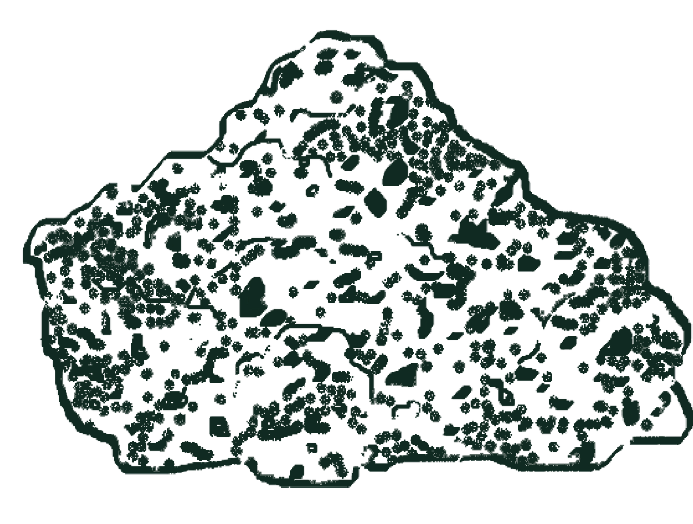

04 · Poučna staza
Crkveni jarak
Potok Kamenjača usjekao je duboki jarak pod najvišim vrhom gore. Uz njega vodi staza na kojoj se, na sedam i pol kilometara, izmjenjuju slapovi, kristalne stijene, tri kata šume i ostatci pavlinskog samostana.
Shema staze nije geografska karta u mjerilu — služi za snalaženje u sadržaju. Za teren koristi oznake na stazi i kartu Parka.
Prije polaska
Kako do staze i što ponijeti
Ulazi
Glavni ulazi su u blizini jezera Mikleuška — uz samo jezero i južnije od njega. Dodatni ulaz je na sjeveru, kod vrha Humka. Staza se spaja i s brojnim planinarskim putovima.
Težina i oprema
Staza je lagana do umjerena, uređeni šumski put. Potrebna je udobna sportska obuća i odjeća. Dio staze je zahtjevniji, s usponima i korijenjem — prilagodi tempo vremenu i vlastitoj kondiciji.
Vrijeme
Prosječno oko 2 sata hoda. Dodaj vrijeme za čitanje panela, fotografiranje i odmor kod slapa. Ljeti kreni rano, zimi provjeri stanje staze.
Pravila ponašanja u šumi
- Poštuj životinje i ne uznemiravaj ih.
- Ne beri zaštićene biljke.
- Ne bacaj smeće — sve što doneseš, odnesi sa sobom.
- Ne pali vatru.
- Ostani na stazi i ne gazi mlado drveće.
Važni datumi u zaštiti prirode
- 21. ožujka
- Svjetski dan šuma
- 22. ožujka
- Svjetski dan voda
- 22. travnja
- Dan planeta Zemlje
- 22. svibnja
- Svjetski dan biološke raznolikosti
- 5. lipnja
- Svjetski dan zaštite okoliša
- 11. prosinca
- Svjetski dan planina
Doživljaj
„U sukobu potoka i stijene…“
„…potok uvijek pobjeđuje. Ali ne zbog snage, već zbog upornosti.“
Natpis s odmorišta staze Crkveni jarak
Kamenjača ne teče preko gore — ona je reže. U višim dijelovima usjekla je duboke i uske jarke, a u nižim teče prostranijim dolinama prema slivu Lonje, odnosno Save. Njezina izdašnost ovisi o kiši i snijegu, ali i o tome koliko vode šuma zadrži.

U potoku Kamenjača, nedaleko od staze, utvrđen je nalaz gabra — stijene tipične za oceansku koru.